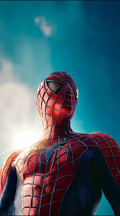
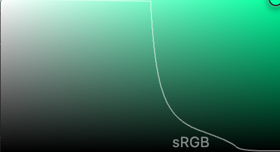
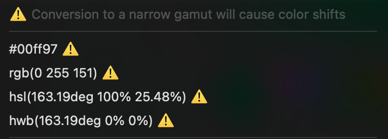

Теория цвета
и практики гибкого кода
"Вместе с цветом в нашу жизнь приходят эмоции"
Анна Ширяева
Frontend-разработчик
Анна Ширяева
"Вместе с цветом в нашу жизнь приходят эмоции"
Как-то так...

1// Токены — единый источник правды
2export const theme = {
3 accent: '#F637C6',
4 surface: '#0E1016',
5 radius: 14,
6};
7| Строка 1 | — |
| Строка 2 (выбрана) | 18% |
| Строка 3 | hover |
Тут будет теория
Cкрипт для каждой секции работает с атрибутами СЕКЦИИ, а не документа.
Тема переключается атрибутом data-theme у секции.
script не нужен
Чтобы постоянно не менять настройки браузера при тестировании кода, вы можете временно подменить тему прямо в инструментах разработчика: 1. Откройте инspector кода (нажмите F12 или Ctrl + Shift + I / Cmd + Option + I). 2. Нажмите Ctrl + Shift + P (в Windows) или Cmd + Shift + P (в Mac), чтобы открыть панель команд. 3. Введите слово Emulate (или Имитировать). 4. Выберите из списка: • Emulate CSS prefers-color-scheme: light • Emulate CSS prefers-color-scheme: dark
Значения выбираются функцией light-dark().
Используются Canvas и CanvasText.
Атрибуты data-theme и data-accent меняют палитру.
script не нужен
Тема определяется медиазапросом без JS.
Смените тему ОСМеняем только --base — палитра пересчитывается через oklch(from ...).
Все поверхности — производные от акцента и фона.
Три палитры и разные радиусы скругления.
Тема хранится между визитами. У всех секций — свой ключ.
script не нужен
Тема и акцент — через :has() и радиокнопки.
h · оттенок
320
c · насыщенность
0.20
l · светлота
65%
Светлота отвечает за «вес» цвета. Она же — главный параметр, от которого зависит читаемость текста на фоне.
l ↑
l ↓
l ↑ + c ↓
l ↓ + c ↑
l ↑ + alpha ↓
l ↓ + c ↑
Насыщенность — это «громкость» цвета. Один и тот же оттенок
при разной c звучит как крик или как шёпот.
c ↑
c ↓
c ↑ + l ~ 55–65%
c ↓
c ↓ + l ↑ + h в тёплую
c ↑↑ + l ~ 60–70%
c ↓ + l ↓
c ↑↑ + l ~ 50%
Оттенок — это «характер» цвета. Он двигает цвет по кругу: от красного через жёлтый, зелёный, синий и обратно.
h к 30–60°
h к 200–260°
h ~ 340°
h ~ 140°
h ~ 70–85° + l ↑
h ~ 200° + c ~ 0.10
h ~ 70° + c ↓ + l ↓
h ~ 100–130° + c ↑↑
Эти слова описывают не отдельный цвет, а отношения между цветами в интерфейсе — разницу светлот, радиусы, тени.
l между элементами ↑
l ↓ + c ↓
c ↓ + h монохром + радиус ↓
h сдвиг + c ↑ + радиус ↑
c ↓ + тень в тон + радиус ↑
c ↑ + тень серая + радиус ↓
c ↑↑ + контраст ↑ + h красный
c ↓ + l ↑ + h тёплый
Эти слова — про целое настроение интерфейса. Они складываются из нескольких параметров сразу, а не из одного.
c ↓ + контраст ↓ + узкая палитра
c ↓ + l ↑ + h в тёплый
c ~ 0.15 + h монохром + тень в тон
h ~ 40–60° + c ↓ + l ~ 70%
h ~ 200–280° + c ↑ + контраст ↑
h ~ 60–120° + c ↓
h ~ 200° + c ↑ + монохром
Самый человеческий уровень. Здесь эмоция — это образ, а образ — это конкретная точка в цветовом пространстве.
h ~ 20–40° + l ~ 65% + c ~ 0.15
h ~ 200° + c ~ 0.12 + l ~ 60%
h ~ 100° + c ~ 0.06 + l ~ 45%
h ~ 350° + c ~ 0.15 + l ~ 30%
h ~ 25° + c ~ 0.25 + l ~ 40%
h ~ 220° + c ~ 0.08 + l ~ 80%
h ~ 70° + c ~ 0.15 + l ~ 70%
Поднимаем светлоту, оставляя оттенок и насыщенность на месте.
Опускаем светлоту. Оттенок и насыщенность те же.
Светлее и одновременно менее насыщенный — цвет как бы растворяется в белом.
Темнее и насыщеннее — цвет становится «плотным».
Поднимаем насыщенность. Оттенок и светлота те же.
Снижаем насыщенность — цвет становится тише, но не темнее.
Повышаем насыщенность и чуть поднимаем светлоту до «вкусной» середины.
Снижаем насыщенность, добавляем тень в тон и увеличиваем радиус.
Двигаем оттенок по кругу в сторону красного и оранжевого.
Двигаем оттенок в сторону синего и голубого.
Двигаем оттенок к жёлтому, поднимаем светлоту.
Оттенок в голубую зону, насыщенность умеренная, светлота средняя.
Уходим в синий, снижаем насыщенность и светлоту — цвет «гаснет».
Уходим в тёплый жёлтый, поднимаем насыщенность и светлоту.
Снижаем насыщенность, уходим в монохром, уменьшаем радиусы.
Сдвигаем оттенок, повышаем насыщенность, увеличиваем радиусы.
Выберите эмоцию слева. Она превратит «было» в «стало» по своему правилу. Ползунки тут же применяют правило к новому цвету. «Стало» скрывается только при смене эмоции.
h · оттенок
35
c · насыщенность
0.10
l · светлота
65%


| Способ | Плавность | Производительность | Совместимость | Сложность |
|---|---|---|---|---|
| CSS var + @property | Идеальная | Высокая | Все современные | Средняя |
| Маска | Плавная | Средняя | Все | Высокая |
| filter: hue-rotate | Резкая | Высокая | Все | Низкая |